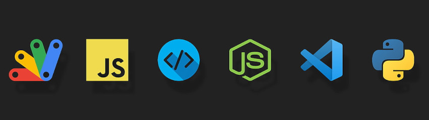

• Sobre
Sou um desenvolvedor oriundo da Barra dos Coqueiros - Sergipe (SE) e por enquanto tenho apenas alguns meses de estudo e pouca experiência práticas, esse está sendo um dos primeiros mini-projetos que estou desenvolvendo. Ele conta com código totalmente em HTML e CSS, sem nenhuma aplicação de Javascript, formulários, cadastros, banco de dados, back-end ou qualquer outra tecnologia de interação entre usuário banco de dados, meramente para análise visual e navegação entre as páginas se possível.
• Estudos
As tecnologias que tenho estudado até agora são Python, HTML5, CSS3 e futuramente vou partir para o estudo de Javascript e desenvolvimento front-end para adentrar ao mercado de trabalho. Pretendo desenvolver em tecnologias React e React Native usando bibliotecas como Node.js também para o desenvolvimento Mobile ou qualquer requisito para entrar no mercado. Também pretendo aprender a língua inglesa para complementar meu currículo e ampliar minhas oportunidades de trabalho na área de Tecnologia.
• Diploma ?
Atualmente sou vestibulando prestes a cursas Ciência da Computação numa Universidade Federal, no meu caso, na UFS - Universidade Federal de Sergipe.